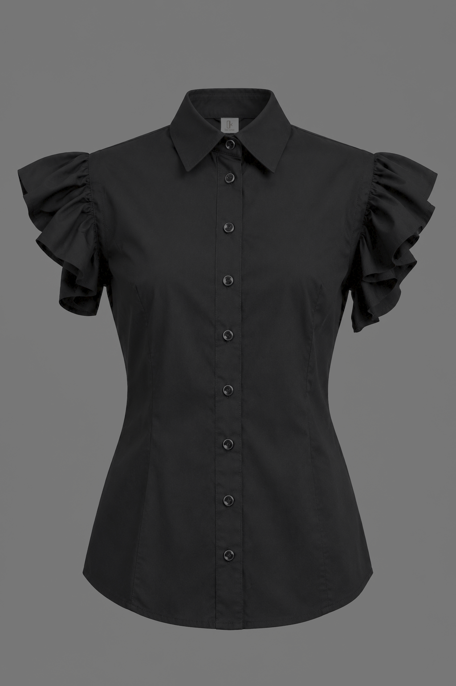
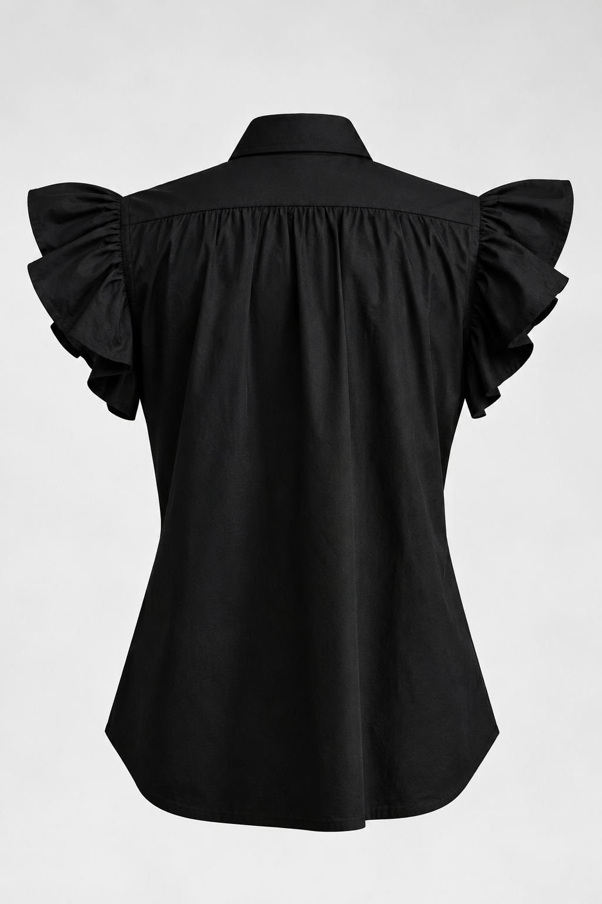
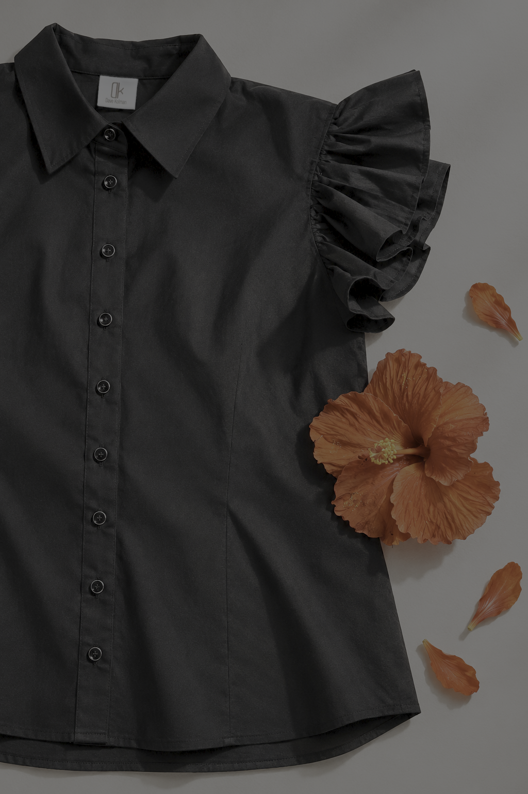

01
CAMISA CAYENA
Confeccionada en popelina de algodón, la Camisa Cayena destaca por un entalle preciso con pinzas que moldean sutilmente la silueta. Suma un clásico cuello camisero, botones de borde plateado y mangas rematadas en volantes de corte caracol que aportan fluidez y movimiento orgánico. Cuenta con acabados limpios e impecables en costura francesa.
Talla de la pieza: 12
Largo total: 62 cm
Disponible solo por encargo. $ 294.000 COP Solicitar pieza